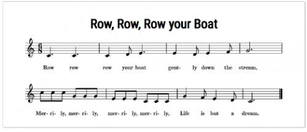
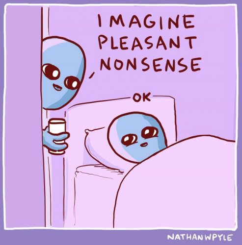

S. is a musician with a concert coming up. She worries for weeks that she’ll make mistakes, critics will hate her, her career down the tubes. During the concert she loses track of the music for 15 seconds, and improvises her own notes into the middle of Beethoven's. Afterwards, the applause is deafening, her performance called stunning. It’s everything she could hope for, fears quieted, for now.
R. dreams of failing tests, standing without pants at work, teeth falling out. He wakes, panicked. Each day it takes
hours to shake the feeling that something terrible has happened.
P. is concerned about his failing business. The bills keep coming. He sees the employees laid off, his kids’ sadness, the foreclosure, the shopping cart, the bridge he’ll have to sleep under. These same fears have been happening for years.
Nightime: our brain makes up stories and then gets scared, sad or angry about them.
Daytime: our brain makes up stories and then gets scared, sad or angry about them.
While we’re asleep, we don’t question the reality of the dream. Out cold, we totally buy into it. In dreams there is indeed a house, an ocean, a cheating boyfriend. It feels real until we open our eyes.
And sometimes long after.
The night dream creates its own world. It wanders unburdened by appropriateness into wackadoo fantasy. Odd things happen. Objects morph, subjects change, with no continuity. Emotions accompany it all.
When we’re awake, we don’t question the reality of the dream either. We totally buy into that too. There is indeed a house, an ocean, a cheating boyfriend.
The day dream also creates its own world. Situations we like or don’t like appear very real. Odd predictions of things that never happen. Emotions accompany it all.
Same.
And yet somehow when our eyes open, we call this “reality.”
Not noticing that daytime events almost never occur the way we anticipate, or that memories and interpretations of the so-called past are almost always inaccurate (don’t take my word for this- there are zillions of studies proving it.)
Not noticing that whatever health or money or love situations appear to happen, we are still literally ok.
Even if we’re on the street, or seemingly alone, or dying, or wanting to die.
Seems we’d much rather pretend these movie scenes are real, and panic, yearn, wish, for years.
Now if, reading this, the mind is indignant at the possibility that all those teachers could be right- (**see below for a taste)
that the waking world is not real and instead is a dream-
Then it should have no trouble finding the dividing line between asleep and awake. Where does it flip from one to the other? Does the end of the night dream live in the eyelids, in the position of a body?
Could it be the only difference is the thought, “I am awake now, and this now is real?”
Meanwhile, either way, awake or asleep, eyes open or closed, the dream focuses on Me.
The self.
The hero, centerpiece, protagonist and focal point of every story.
It revolves around us.
Making us seem like we matter, we’re important, we’re necessary.
Our self is required.
Ok fine, so what? What happens when this is seen?
Well, some folks call that “enlightenment.”
But whether that’s so or not, maybe the day dream can just become more fun.
As we float
In a dream boat
Merrily merrily.
Merrily merrily.
Because life
is but…
Click here to get your every week.
**
“A wise man, recognizing that the world is but an illusion, does not act as if it is real, so he escapes the suffering.” ~ Buddha
“The world, indeed, is like a dream and the treasures of the world are an alluring mirage!” ~ Buddha
“We are like the spider. We weave our life and then move along in it. We are like the dreamer who dreams and then lives in the dream. This is true for the entire universe.” ~ The Upanishads
"That world that appears to you in your dreams at night is just as unreal as the world that appears to you when you are awake. There is no difference whatsoever." ~Jac O'Keeffe
“This place is a dream.
Only a sleeper considers it real.
Then death comes like dawn,
and you wake up laughing
at what you thought was your grief.” ~ Rumi
"Your world is a dream. You're living in an illusion." --Adyashanti
“All that apparently manifests is a hypnotic dream.” --Tony Parsons

